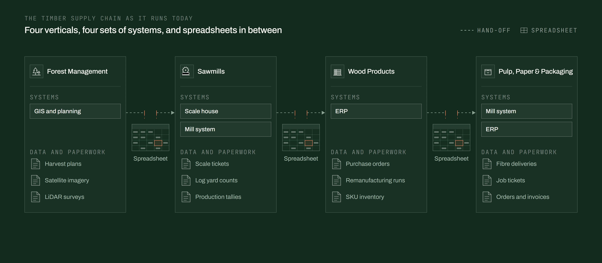

Theo Leslie and David Jayatillake.
Experience, and the work at Quarri.
Theo Leslie
Change and transformation programmes led at companies turning over $1bn+, FTSE-listed among them. As Director of Strategy at Worldpay, led the internal strategy team and ran change across the business alongside McKinsey.
At Quarri, leads AI implementations across the timber supply chain, from forest management to the mill, including at a publicly listed timberland company. Each is run as a change programme: the goal agreed with leadership, then each department owning its part.
- Co-founder & CEOQuarri · theo@quarri.ai
- Director of StrategyWorldpay
- VP GrowthRed Sky, a lending fintech
- Founding team, delivery divisionA large hospitality group
- Chartered accountantPwC
David Jayatillake
Designed the architecture Quarri runs on. Each customer has its own database, its connectors run the same way on every schedule, and every answer is drawn from one model of the business.
That model is a semantic layer, the subject of two companies founded and of regular writing and speaking. The second, Delphi Labs, joined Cube, with the role of VP of AI. The conclusion from twenty years of data work: most mid-sized operators will never hire a data team.
- Co-founder & CTOQuarri
- VP of AICube
- FounderDelphi Labs, which joined Cube
- FounderAn earlier semantic layer startup
- Data leadershipLyst and Worldpay
The scale of the work so far.
Figures from our delivered work in forestry, sawmills and wood products, rounded down. Two are estimates and are marked. We don't name our customers.
hours of manual work a year taken out across our implementations, more than one full-time person.
Across live implementations · Estimatedtrip tickets a year read from scans into structured load records, at the current weekly volume.
A timberland manager · Estimatedinventory records reloaded and verified.
A sawmillboard feet of finished inventory brought into reporting.
A sawmilltonnes of harvest, four years of daily data.
A forestry operationsales orders across 19 years of history.
A lumber and millwork manufacturerweigh records matched to bills of lading and invoices.
A forestry operationclosed purchase orders analysed.
A lumber and millwork manufacturerThe data has grown faster than the tools to use it.
Every step of the timber supply chain runs on information: what to harvest and haul, what each mill can make from the wood it receives, what to stock, and what to sell at what price. The capture side has moved quickly. What happens to the data after it is captured has not.

As capture improves, the problem gets bigger. Each new source arrives with its own format and its own system, and every hand-off between forest, mill and customer adds more to reconcile, with no more time to do it.
The timber industry has had less enterprise software than agriculture, mining or oil and gas, and the mid-sized operators who make up most of it, from forest managers to mills and converters, cannot justify a data team of their own. That is the gap we build for.
A peer-reviewed review of 69 studies on AI in the forest products supply chain lists seven barriers to adoption. One concerns the models; three concern the data and three the organisations that hold it. Subedi, Gautam and LeBel, Forestry 99(2), 2026. Our write-up of the paper.
Run as a change programme, with your team building.
A goal before a build
One goal for the business and a measure for it, such as hours moved from data entry to checking.
Team leads choose what comes first
Each team names the process that takes longest and the question it cannot answer today.
Encoded once, run the same way
Built with the people who will run it, then run on Quarri's server the same way every time.
Straight about cost
If your own project management will do the job, we say so. Advice while you get started is free.
How we protect your data is on our security page.